Diagrama de Marcos
Mediante este diagrama es posible representar o diseñar un algoritmo estructurado de manera gráfica. El plugin de cajas hace un fuerte uso de FG, el framework gráfico que sustenta otros plugin gráficos, incluidos los de UML+.
El plugin provee los siguientes elementos para modelar el algoritmo:- Contenedor
- Marco Sentencia
- Marco if
- Marco if - else
- Marco while
- Marco do while
- Marco switch
- Marco case
- Marco default
- Marco for
- Marco try catch
Contenedor
Este elemento es la base del diagrama, puede ser visto como una función caracterizada por una firma. El contenedor es necesario para contener a todos los otros elementos, ya que es el único que se puede generar directamente sobre el diagrama. Para crear un contenedor se debe seleccionar el icono en forma de caja lila con dos cajas internas de la barra específica del marco.
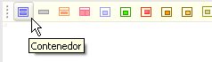
Figura 1. Creación de un contenedor
El contenedor permite especificar una firma, que puede ser caracterizada como f(x), una función en un lenguaje estructurado y una función asociada a una clase en un lenguaje O.O.La firma se puede digitar directamente o seleccionar de algunas que vienen por defecto.
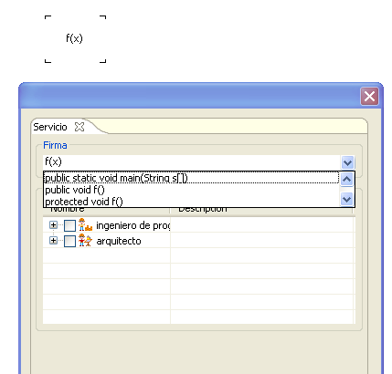
Figura 2. Caracterización de un servicio
Adicionalmente se puede caracterizar el contenedor por un perfil de Ingeniero de Programación o Arquitecto.Marco Sentencia
Las sentencias permiten realizar asignaciones, llamadas a operaciones, creación de variables, aserciones y todas las afirmaciones necesarias para un algoritmo estructurado. Para agregar una sentencia se debe seleccionar el icono en forma de rectángulo gris de la barra especifica del marco.
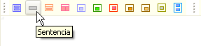
Figura 3. Creación de un marco sentencia
Al agregar una sentencia esta será previsualizada dentro del contenedor. De esta es posible configurar la sentencia en sí y su ubicación. Existen también algunas sentencias simples de creación de variables como plantilla.

Figura 4. Datos de creación de una sentencia
Marco Ifexcepción
Mediante este marco se puede expresar una pregunta que necesariamente podrá se evaluada como una sentencia booleana. Para crear un if se selecciona el icono en forma de rectángulo naranja enmarcado.
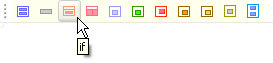
Figura 5. Creación de un marco If
La única opción de configuración es la pregunta en si, para este caso se ha tomado una simple comparación numérica basada en los parámetros de la firma del contenedor.
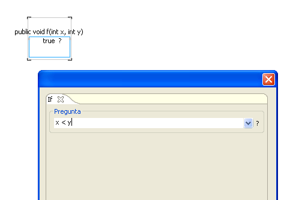
Figura 6. Ingreso de la pregunta en el marco If
Si una pregunta evalúa a verdadero se evaluarán los marcos dentro del if. Dicho espacio funciona como un contenedor y puede tener sentencias otros if y todo tipo de marcos al interior.
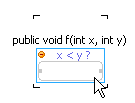
Figura 7. Representación del marco IF
Marco If - Else
Este marco es una extensión del If, para el cual se ha agregado en caso de que la pregunta sea evaluada a falso. Para crear un marco if-else se debe seleccionar el icono en forma de caja roja subdividida en dos del la barra específica del marco.
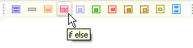
Figura 8. Creación de un marco If-Else
Al igual que para el if, la única configuración necesaria es la de la pregunta. Los nuevos espacios agregados serán a la izquierda para el caso en que se evalúe verdadero y el else a la derecha en caso de que sea falso.
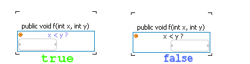
Figura 9. Compartimentos para valores verdadero y falso
Marco While
El while indica un ciclo controlado por una pregunta, que es realizada antes de cada ejecución. Para crear un while se debe seleccionar el icono en forma de cuadrado relleno lila, de la barra específica del marco.
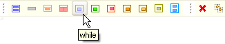
Figura 10. Creación de un ciclo while
El parámetro necesario es la pregunta de control a evaluar en cada ciclo, para este caso se escogió una pregunta de comparación numérica típica. Al igual que en el if, el marco while tiene un contenedor para las sentencias que se ejecutarán mientras la condición sea verdadera.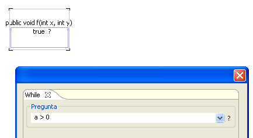
Figura 11. Condición para el ciclo while
Marco Do-While
Este marco es una variación del While, donde la condición es evaluada despues del bloque de sentencias, por lo que esta es al menos evaluada una vez. para crear un ciclo do-while. El icono a seleccionar en la barra de especifica del marco es similar al del while, solo que de color verde.
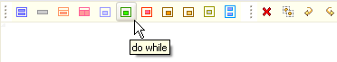
Figura 12. Creación de un ciclo do-while
La única diferencia gráfica con el marco while es la colocación de la pregunta que se puede observar al final del mismo y no al principio.
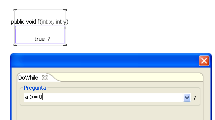
Figura 13. Condición para el ciclo do-while
Marco Switch
Este marco representa una pregunta acerca del estado de una variable, en la que pueden existir múltiple opciones a considerar.Este marco se complementa con los marcos case y default. Para crear un Switch se debe seleccionar el icono en forma de rectángulo rojo enmarcado de la barra específica del marco.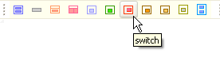
Figura 14. Creación de un marco switch
En la pregunta se puede colocar una variable, una expresión numérica o cualquier otra expresión que pueda ser evaluada a un cierto valor para determinar si es verdadera o falsa.
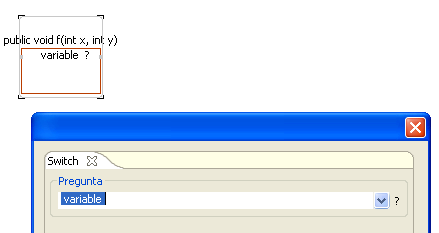
Figura 15. Variable a evaluar en el switch
El marco switch tiene en un principio un espacio donde es posible insertar un case o un valor por defecto únicamente. Cuando este espacio sea ocupado se añadirá otro nuevo para poder agregar mas marcos case o un marco default.
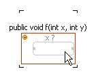
Figura 16. Representación de un switch
Marco CaseEste marco solo se puede aplicar dentro de un marco Switch. Permite dar una asignación a la pregunta de éste para evaluar si es falsa o verdadera. Para crear un marco Case se debe seleccionar el icono en forma de rectángulo enmarcado amarillo de la barra específica del marco.
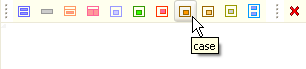
Figura 16. Creación de un case
El case requiere del valor con el que se evaluará la sentencia del switch y opcionalmente si posee un break para salir del switch en caso de ser verdadero.
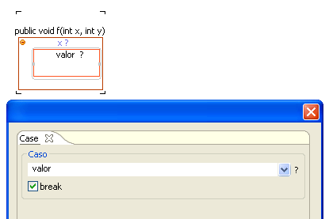
Figura 17. Valor del break
Para agregar mas marcos case al mismo switch, aparecerá un espacio al final y entre los case existentes.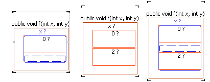
Figura 18. Múltiples case dentro de un switch
Por ultimo cada case tiene un espacio tipo contenedor para el caso de que el valor de la sentencia evalúe a verdadero.
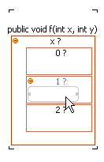
Figura 19. Espacio para inserción en caso de verdadero
Marco Default
Este marco solo se puede generar dentro de otro switch, se evalúa si se llega a el, sin importar el valor de la expresión en el switch, o lo que quiere decir es el caso por defecto. Para crear un marco Default se debe seleccionar el botón en forma de rectángulo amarillo enmarcado de la barra específica del marco.
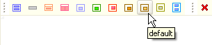
Figura 20. Creación de un marco default
Debido a que el marco Default no evalúa ningún valor en particular, lo único que es posible cambiar es si posee break o no. Hay que notar que este marco se puede colocar en cualquier posición dentro del switch, aunque generalmente se coloque al final.
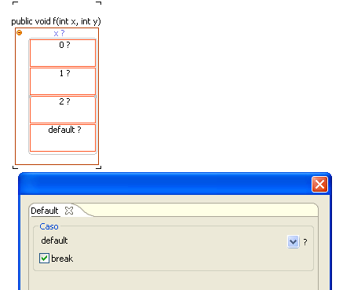
Figura 21. Insertando el marco default en el Switch
Marco ForEl marco For representa un ciclo con una signatura particular, que consta de una inicialización, una pregunta y una actualización. Para crear un for se debe seleccionar el icono en forma de rectángulo enmarcado de la barra específica del marco.
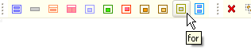
Figura 22. Creando un marco For
El
marco For posee tres elementos de configuración, el Inicio que es un paso que
será ejecutado únicamente la primera vez, la pregunta que se evaluará
en todos los pasos y la actualización que se llevará a cabo en todos
los pasos.
La imagen muestra el ejemplo normal para el ciclo, donde se lleva un conteo de 10 ciclos a través de la variable i.
Figura 23. Inicio, pregunta y actualización para el marco for
El plugin de marcos ofrece una presentación gráfica para esto, en la que se muestran el inicio y la pregunta en la parte superior de la caja, seguida por el espacio similar.
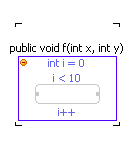
Figura 24. Representación del marco For
Marco Try Catch
Este marco adiciona una herramienta para generar programas mas robustos, mediante esta se puede probar una sentencia que es susceptible a fallo (try), detectar el error (catch) y llevar a cabo una tarea en caso de que este se presente. Para crear un try-catch se debe seleccionar el icono en forma de dos rectángulos azules enmarcados de la barra específica del marco.
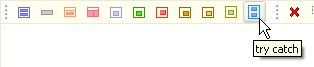
Figura 25. Creación del marco Try-Catch
La opción a configurar en este caso es la Captura de excepción que se pretende realizar. El plugin trae tres plantillas para caso de excepciones, de IO y de runtime.
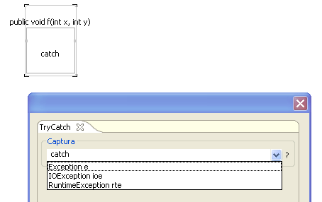
Figura 26. Captura dentro del marco Try-Catch
El marco tiene dos espacios, el superior para la sentencia a intentar y el inferior que se activa en caso de que se lance excepción durante la ejecución de la sentencia.
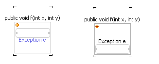
Figura 27. Espacios para la inserción del código try y el catch